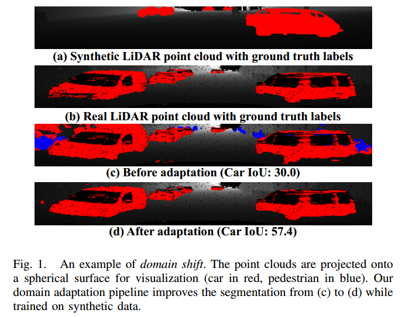
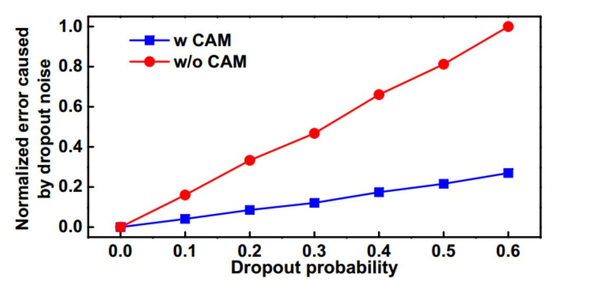
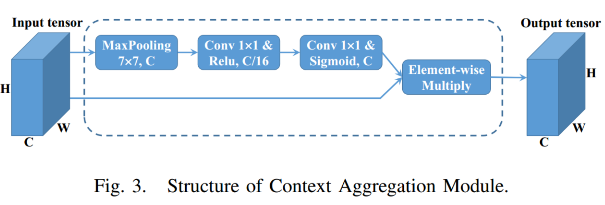
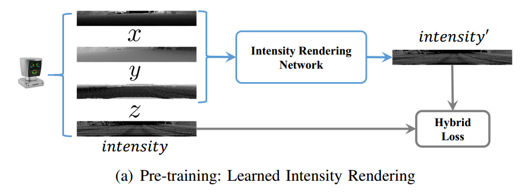
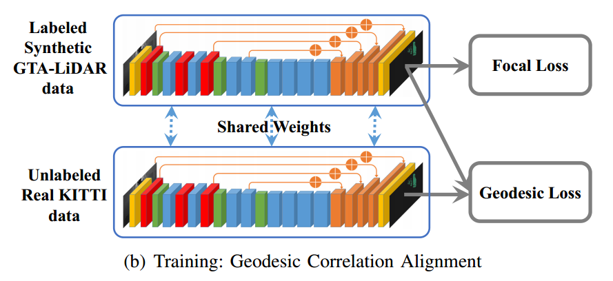
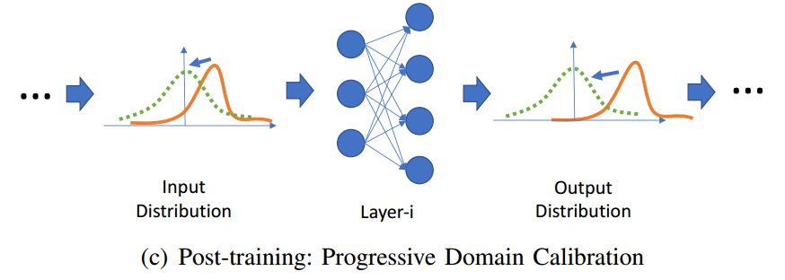
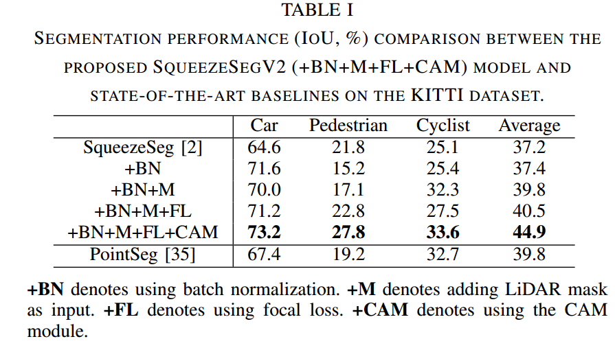
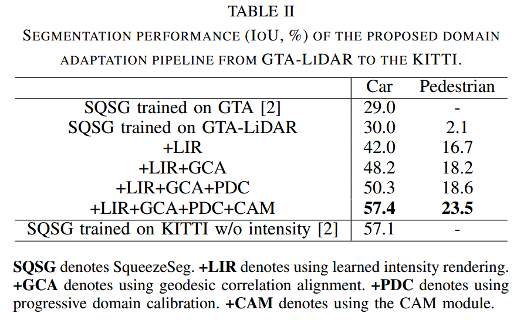

写在前面的话
其实之前读了十几篇论文了，也有复现论文的一些经历，可惜都没有记录下来，决心从现在开始进行记录，方便自己查阅，如果有能帮到大家一点点的地方，那就更好了。
读这篇论文的目的是我们论文进入到实验阶段，正在挑选3D UDA的基本框架，用于跑基线。
Abstract
故事线：真实世界标注点云数据稀有，故用GTA5的模拟数据集。然而，由于领域转移，在合成数据上训练的模型通常不能很好地推广到现实世界。所以本文在改进分割模型的情况下提出了一个DA的pipeline，用于从合成数据到真实数据的领域自适应。
Introduction
SqueezeSeg 将 3D LiDAR 点云投影到球面上，并使用 2D CNN 预测点云的逐点标签，但是存在精确度不高，噪声丢失的问题。本文引入模拟数据集，虽然解决了这个问题，但研究初期会导致在合成数据上训练的模型在真实数据上会发生灾难性的失败。如图所示：
锚点标题

本文贡献可以总结为以下几点：
- 使用 CAM 改进了 SqueezeSeg 的模型结构，以提高其对丢失噪声的鲁棒性。
- 提出了一个领域适应训练管道，可以显着减少合成数据和真实数据之间的分布差距。
- 创建了一个大规模 3D LiDAR 点云数据集 GTALiDAR，它由 100,000 个通过渲染强度增强的合成点云样本组成。
Improving the model structure
A. Context Aggregation Module
前文提到的丢失噪声，指的是LiDAR点云数据包含的许多缺失点，下面的这两张图可以明显对比：

第二张图那些零零碎碎的黑点就是丢失噪声。
引起它的原因有以下几点：
- 有限的传感器范围
- 光滑表面上传感激光的镜面反射
- 入射角的抖动
丢失噪声对 SqueezeSeg 有重大影响，尤其是在网络的前几层。在卷积滤波器的感受野非常小的前几层，小邻域中的缺失点可能会严重破坏滤波器的输出。
这里有一个简单的数值实验，将随机张量输入卷积滤波器，其中一个在 3 × 3 卷积滤波器之前有 CAM，另一个没有 CAM。随机向输入添加丢失噪声，并测量输出误差。当增加 dropout 概率时，误差也会增加。对于所有丢失概率，添加 CAM 可以提高针对丢失噪声的鲁棒性，因此误差始终较小。如图所示：

为此本文提出了上下文聚合模块（CAM）来降低对丢失噪声的敏感性，如图所示：

CAM 从具有相对较大内核大小的最大池开始。最大池聚集具有更大感受野的像素周围的上下文信息，并且对其感受野内的丢失数据不太敏感。在SqueezeSegV2中，在前三个模块（1个卷积层和2个FireModules）的输出之后插入CAM，其中滤波器的感受野很小。从后面的实验中可以看出，CAM：
- 在真实数据上训练时显着提高了准确性
- 在合成数据上训练和真实数据测试时显着减少了域间隙。
当时我这里有一个疑问，既然是因为滤波器的感受野比较小，造成性能明显降低，为什么要在感受野比较小的前三个模块之后才插入CAM呢？我思考以后得出的结论是：可能是为了通过 CAM 的机制，即聚合更大感受野的上下文信息，来提高对整体上下文的理解。CAM 的设计目的就是通过更大的感受野来聚合更广泛的信息，从而减轻由于 dropout noise 导致的问题。
B. Focal Loss
公式定义和解释如下：$F L\left(p_t\right)=-\left(1-p_t\right)^\gamma \log \left(p_t\right)$，等式左边是焦点损失的整体表示，其中 $p_t$ 代表模型对某个样本属于正类别的预测概率。$-\left(1-p_t\right)^\gamma$ 是损失的调制因子，用于调整正类别样本的损失。当模型对正类别样本的预测概率 $p_t$ 较小时，调制因子趋近于 1，不影响损失。当 $p_t$ 接近 1 时，调制因子趋近于 0，减小对于容易分类的样本的损失。这种机制使得模型更加关注难以分类的样本。$\log \left(p_t\right)$ 这一部分是交叉熵损失，用于度量模型的预测与实际标签之间的差异。当模型的预测接近实际标签时，交叉熵损失趋近于 0。
综合起来，焦点损失通过引入调制因子，使得容易分类的样本的损失减小，而难以分类的样本的损失保持较高。这种机制有助于解决在类别不平衡数据集中模型更容易受到容易分类样本的影响，而忽视难以分类样本的问题。
Domain Adaptation Training
本节介绍了本文提出的UDA方法，如图所示。



A. Learned Intensity Rendering（学习强度渲染）
由于合成数据集中缺少强度（intensity）信息的问题，提出了此方法。
合成数据的限制
合成数据集中只包含 x、y、z 和深度（depth）通道，缺乏强度信息。在之前的工作中，显示了强度是一个重要的信号，而没有强度可能会导致严重的准确性损失。强度通常是激光雷达数据中的一个关键特征，能够提供有关目标的重要信息。
学习强度渲染
为了解决这个问题，文中提出了一种称为learned intensity rendering的方法。其思想是使用一个网络，以点云的 x、y、z 和深度通道作为输入，并预测强度。这个渲染网络可以使用未标记的LiDAR数据进行训练，而这些数据可以在LiDAR传感器可用的情况下轻松收集。作者通过自监督的方式训练了渲染网络，将 x、y、z 通道作为网络的输入，将强度通道作为标签。渲染网络的结构与SqueezeSeg几乎相同，只是去掉了CRF层。
强度渲染可以被视为一个回归问题，通常使用 $\ell_2$ 损失。然而，$\ell_2$ 损失无法捕捉强度的多模态分布。为了解决这个问题，作者设计了一个混合损失函数，同时涉及分类和回归。将强度划分为 n = 10 个区域，每个区域具有一个参考强度值。网络首先预测强度属于哪个区域。一旦选择了区域，网络进一步预测与参考强度的偏差。这种方式，分类预测可以捕捉强度的多模态分布，而偏差预测可以导致更准确的估计。作者使用这个混合损失函数在KITTI数据集上训练了渲染网络，并使用均方误差（MSE）测量其准确性。
训练完渲染网络后，作者将合成的 GTALiDAR 数据输入网络，以渲染点云的强度信息。
这里我当时有个疑问：为什么提出的方法可以以点云的 x、y、z 和深度通道作为输入，并预测强度？反复阅读和查阅资料后得出如下结论：
- 空间关系： 点云的 x、y、z 通道表示每个点的三维空间坐标，而深度通道提供了激光束从 LiDAR 发射到目标并返回的距离。这些空间和深度信息捕捉了点云中点的位置和距离关系。
- 强度与空间关系： 在实际的 LiDAR 数据中，点的强度通常与其所在的位置和距离有关。例如，具有相同材料或反射性质的表面可能会显示相似的强度特征。因此，通过学习从空间坐标和深度到强度的映射，模型可以捕获这种关系。
- 深度学习网络： 使用深度学习网络，特别是卷积神经网络（CNN）等能够学习特征的网络结构，可以有效地从输入的点云信息中提取空间和深度特征，并将其映射到强度信息。
- 自监督学习： 在文中提到，作者使用了自监督学习的方式，将 x、y、z 通道作为输入，将强度通道作为标签。这种自监督学习的方式通过最小化预测强度和真实强度之间的误差来训练网络，使网络能够学习到点云中点的空间和深度与强度之间的关系。
Geodesic Correlation Alignment
- 为了减小合成数据和真实数据之间的领域差异，作者采用了此方法。在训练的每个步骤中，模型同时接收一个合成数据批次和一个真实数据批次。作者计算了在合成批次上的 Focal Loss（有标签数据）以及两个批次之间输出分布的地球距离。总损失包含 Focal Loss 和 geodesic distance 损失两部分。Focal Loss 主要关注点云的语义学习，而geodesic distance 损失惩罚两个领域之间的统计差异。
- geodesic distance 是一种在流形上考虑曲率的距离度量方式，相对于欧氏距离，它更适合处理非线性数据流形。
计算公式是：$ F L\left(X_{\text {sim } }, Y_{\text {sim } }\right)+\lambda \cdot G L\left(X_{\text {sim } }, X_{\text {real } }\right) $，$ F L\left(X_{\text {sim } }, Y_{\text {sim } }\right) $代表关于合成数据（synthetic data）的 Focal Loss。$ X_{\text {sim } } $是模型对合成数据的预测，$ Y_{\text {sim } } $是合成数据的真实标签（有标签数据）。Focal Loss 通常用于处理类别不平衡问题，它关注难以分类的样本，通过调整损失函数的权重，使得模型更关注那些难以分类的重要样本。
$ \lambda \cdot G L\left(X_{\text {sim } }, X_{\text {real } }\right) $中，是关于合成数据和真实数据之间的地球距离（geodesic distance）损失。在这里，$ X_{\text {sim } } $是模型对合成数据的预测，$ Y_{\text {sim } } $是真实数据的输出分布。地球距离是一种在流形上考虑曲率的距离度量方式，它能够更好地处理非线性数据流形。这个损失项的目标是减小合成数据和真实数据之间的分布差异，以提高模型在真实数据上的性能。$ \lambda $是两个损失项的权重系数，用于平衡两者的影响。在这个公式中，$ \lambda $被设置为 10，这是一个经验性的选择，可能是通过实验确定的合适值。
Experiments
细节略去，贴图：


名词解释
感受野
感受野（Receptive Field）是指神经网络中某一层输出的单个单元（神经元）对输入数据的区域大小。在卷积神经网络（CNN）中，每个神经元的感受野是指它在输入数据中接受信息的区域大小。
感受野的大小取决于网络的架构和层数。在网络的较浅层，每个神经元的感受野通常较小，只覆盖输入数据的局部区域。随着层数的增加，每个神经元的感受野逐渐扩大，能够接收到更广泛的输入信息。
在卷积层中，感受野由卷积核的大小和步幅（stride）来定义。卷积核的移动步幅决定了每次移动的距离，从而影响感受野的大小。感受野的概念对于理解网络中神经元如何处理输入信息以及网络的整体信息整合能力具有重要意义。
在深度学习中，研究和理解感受野有助于优化网络结构、设计更有效的特征提取器，并更好地理解神经网络对输入数据的响应方式。
FireModules
FireModules 是 SqueezeNet 中的一个模块，其设计旨在通过减少参数数量来提高模型的效率。SqueezeNet 是一种轻量级的卷积神经网络结构，用于图像分类任务。
FireModules 由两个阶段组成：
- Squeeze 阶段： 这个阶段包含一个 1x1 的卷积层，被称为 Squeeze 层。其作用是将输入数据的通道数（channels）降低，以减少参数数量。
- Expand 阶段： 这个阶段包含两个卷积层，一个 1x1 的卷积层和一个 3x3 的卷积层，被称为 Expand1x1 和 Expand3x3 层。这两个卷积层的目标是在保持模型效果的同时，增加通道数。1x1 的卷积层有助于维持网络的深度，并且 3x3 的卷积层有助于提取更丰富的特征。
FireModules 的整体设计通过这种方式，即通过压缩输入数据的通道数，然后再通过扩展阶段增加通道数，来实现在参数数量较少的情况下保持模型的性能。这使得 SqueezeNet 在相对较小的模型尺寸下仍能实现不错的性能，特别适用于移动设备或资源受限的环境。
强度
在 LiDAR（激光雷达）数据中，强度（intensity）是指激光束被目标表面反射的光的强度或强度值。强度通常用于衡量激光束与目标之间的反射强度，它提供了关于目标表面特性的信息。
在 LiDAR 点云中，每个点都有三个主要属性：
- 坐标信息（x、y、z）： 描述点的三维空间位置。
- 距离信息： 表示激光束从 LiDAR 发射到目标并返回的距离。
- 强度信息： 表示激光束被目标表面反射的光的强度。
强度信息可以提供关于目标表面的反射特性的重要信息。不同的材料和表面状态会导致不同的反射强度，因此强度信息可以用于辨别不同类型的目标或区分不同的地物。
在深度学习中，强度信息有时用于增强模型对点云中物体的识别和分割能力。然而，有时在合成数据中，强度信息可能没有被包含，从而导致模型在真实世界中的性能受到一些限制。在文中提到的上下文中，作者可能使用了学习强度渲染的方法，以从合成数据中学习并合成强度信息，以弥补合成数据中缺失的强度信息。